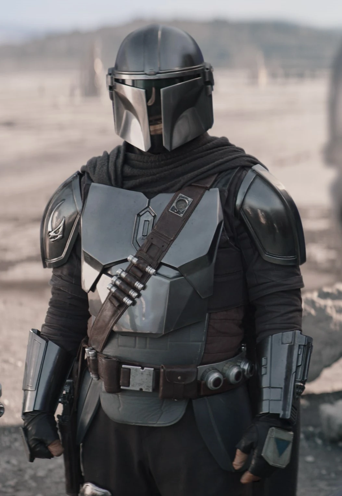
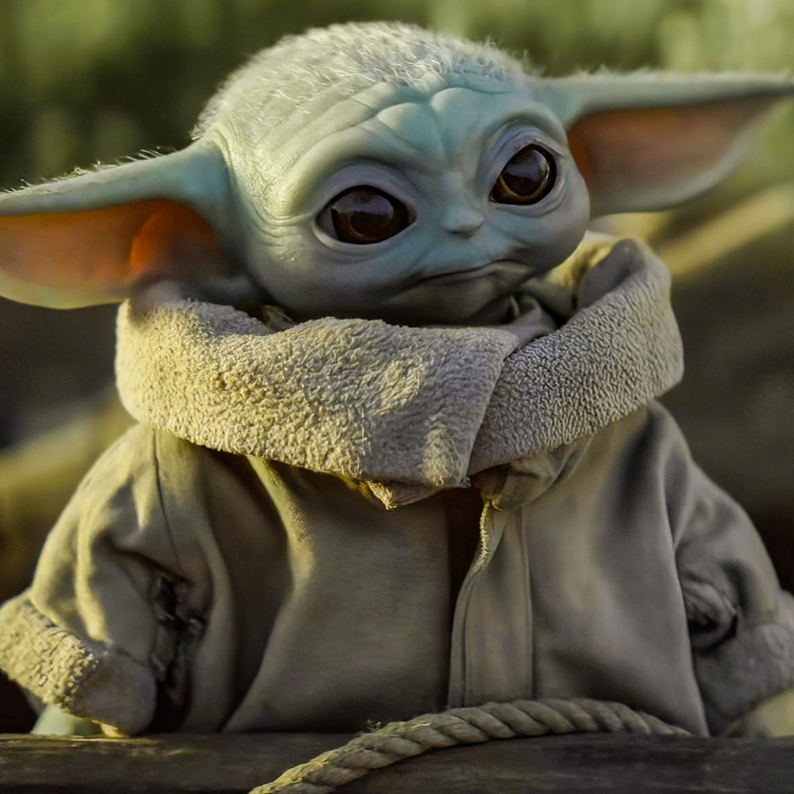
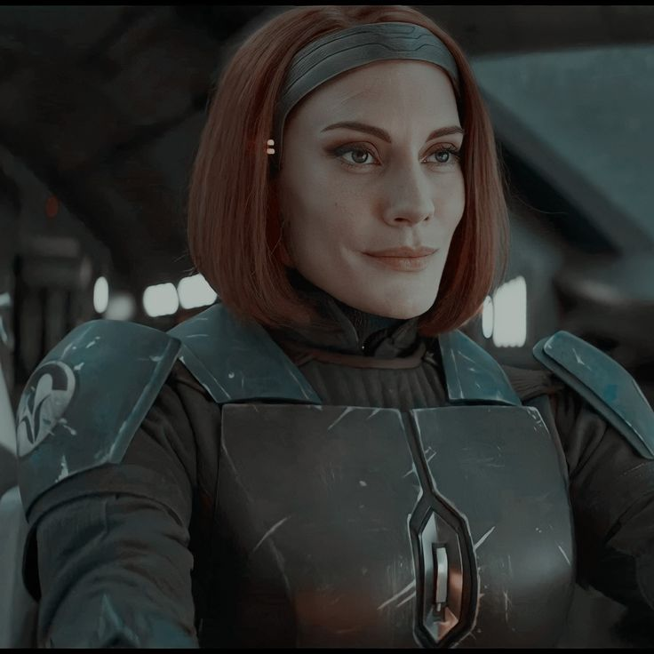

The Cast
Meet the heroes and warriors who bring this epic space western to life.

The Mandalorian
Din Djarin is a foundling who was rescued by Mandalorians during the Clone Wars. Raised in the Fighting Corps, he became a bounty hunter and a member of the Children of the Watch. His life changed forever when he was hired to retrieve a mysterious asset-Grogu.

The Child
Grogu, affectionately known as "The Child" or "Baby Yoda," is a mysterious Force-sensitive being of the same species as Jedi Master Yoda. Despite being 50 years old, he is still an infant by his species' standards. His bond with Din Djarin forms the heart of the series.

Heir to Mandalore
Bo-Katan Kryze is a Mandalorian warrior and former member of the terrorist group Death Watch. She seeks to reclaim Mandalore and restore her people to their former glory. Her quest for the Darksaber puts her on a collision course with Din Djarin.